What is LANCER
One of the hobbies that has captivated me the most, and in which I have been actively participating for the last couple of years, has been LANCER RPG. LANCER is a science fiction tabletop (or online) role-playing game about mecha pilots, created by Miguel Lopez-Hall and Tom Bloom. The game has a really in-depth combat system combat system, and some baselines for storytelling so that the system fits for most of the settings people might want to play in.
In the simplest of terms, LANCER is a game where you play as the pilot of a variety of mechas. Think of the Jaegers from Pacific Rim, the EVAs from Neon Genesis Evangelion, the Mobile Suits from Gundam, or if none of those ring a bell, just think huge robots you can pilot into combat. In LANCER you have a wide range of mechas to choose from depending on your preferred playstyle: Do you like to pepper your rivals from a distance? You could use the luxurious Monarch and rain down missile barrages atop your enemies. Do you prefer instead to engage in glorious melee combat? You could use the ruthless Blackbeard and rip and tear your foes with chain axes. Or, do you perhaps enjoy watching the smiles erase from your enemies' faces as you charge up the weapon known as the Apocalypse Rail? Well, the Barbarossa is there for a reason.
Now, in addition to the cool mechs, the game allows players to tell amazing stories, utilizing the rich in-game lore about this post-futuristic setting where lancer takes place in, 5016 years after the creation of Union, an interplanetary government/corporation that has united countless worlds where humans settled. The competing corporations that have power over wide arays of worlds, and count with thier own planetary fleets. And the overall Cyberpunk+ feeling of the setting. This are just some of the things that make LANCER so awsome.
When do I Play LANCER
I play LANCER with a group of friends. We try to keep our schedule consistent, but because we are all college students the scheduling has changed depending on our current semesters. We normally try to play 2 times a week, every other week, or 4 times a month.
As an example, here is what my friends and I did over the month of February in our LANCER campaign campaign.
| Day | Month | Notes |
|---|---|---|
| 11th | February | The group had to go to a combat zone to salvage resources (it didn't end well). |
| 14th | February | The team had to escape from an enemy emergency response team. |
| 25th | February | The squad had time to recover from our last endeavor, and we got some quality out-of-combat moments. |
| 28th | February | The team was sent out to intercept an enemy resource convoy (for some reason we spent most of the day joking about dehydrated soy cubes). |
Where Can You Play LANCER
To play LANCER, the only real things you need are something to represent your mech, something to represent the enemies, and optionally something to represent the terrain. This is normally done either by using physical figures and terrain, or by using software to depict each character as tokens and use maps for the terrain.
As for playing online, there are platforms such as Owlbear Rodeo and Roll20 where you can use a virtual tabletop environment to achieve all of the above. Playing online has the advantage of eliminating distance as an issue, with the trade-off of needing a communication app so everyone can talk clearly.
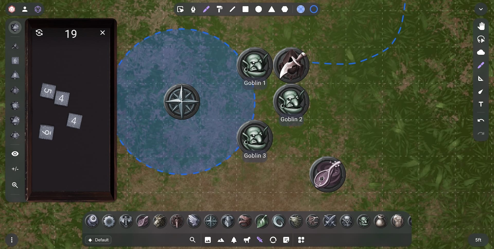
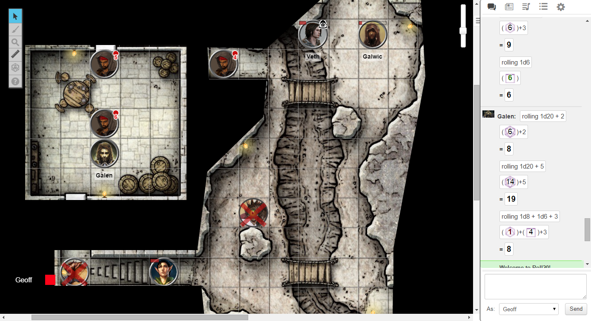
As for playing in person, there are many options such as your local game store, public libraries, or even your own home. The only real limiting factor would be the distance between that location and the people in your group.
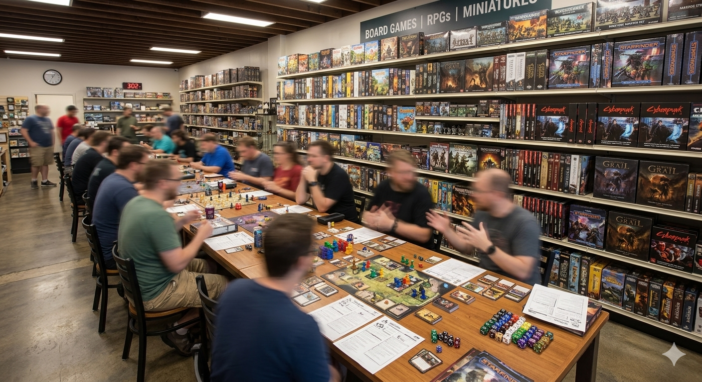
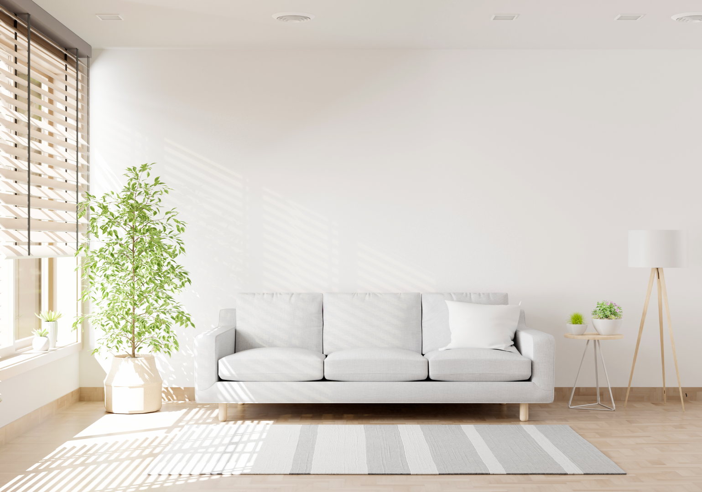
How Can You Play LANCER
After hearing about this hobby, you might be wondering how you can become part of it. Well, to play LANCER you would need a few things.
First, you are going to need a group of friends to play with. Don't have any? You can either go to your local game store where there is a good chance you will find a group willing to take you in, and you would get to know new people in the process, or you could look online for the hundreds of groups that would be more than happy to have you.
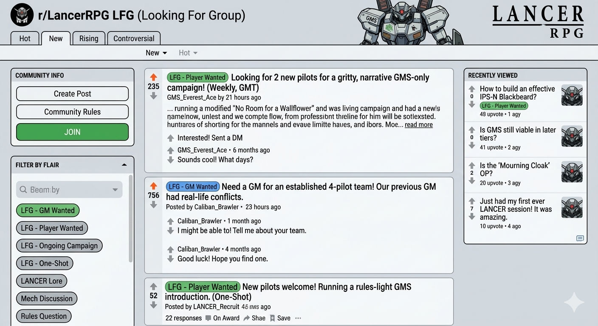
Then you will need to make a character, your pilot. After all, this is an RPG. You can make it as wild or as basic as you like; there is nothing wrong with playing someone like “John Human.”
After making your character, now comes the part that makes this LANCER and not D&D or Cyberpunk RED, picking your mech. Most games start between Licence Level 0 and Licence Level 2. Assuming you start at LL0, you will have three options: the Everest, the balanced frame focused on speed and reliability; the Sagarmatha, the tanky frame built to shield allies and provide buffs; and the Chomolungma, the hacking frame focused on disrupting enemy systems and controlling the battlefield.
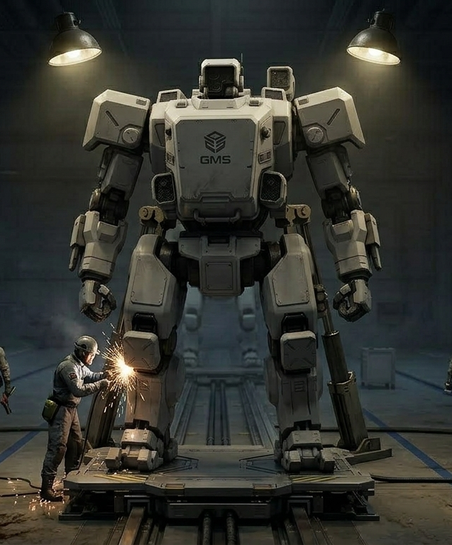
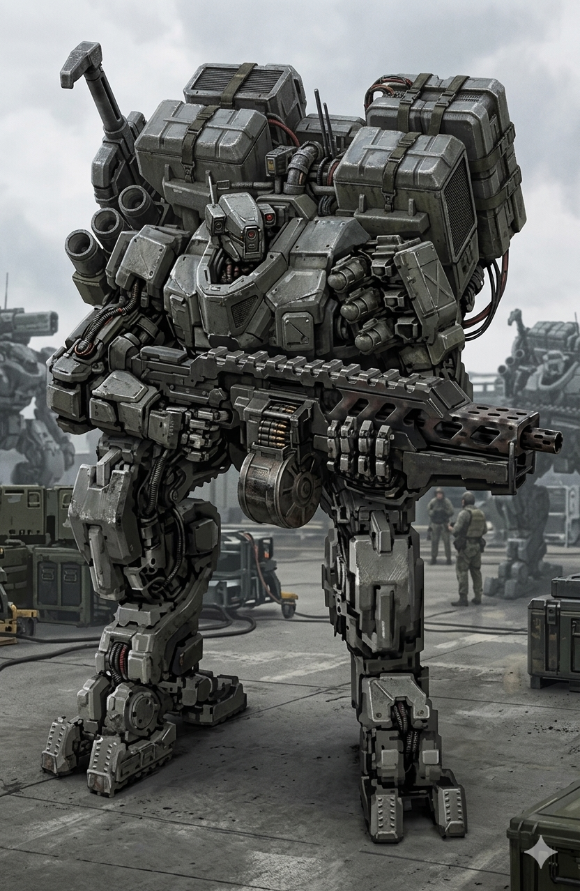
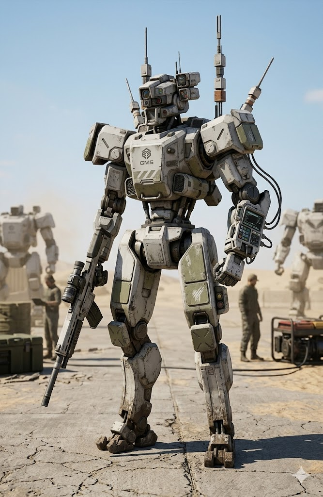
With your character and your mech ready, you can finally start playing with your group. Good luck, pilot.
Why should you try LANCER
Why play LANCER, what is it that draws people into this game? you might be asking. Well, I think there are many answers for that but there's 4 main points that encapsulate why people are drawn into the hobby, and these are:
- Tactical Combat has a deep combat system where positioning, teamwork, and mech builds really matter. Every battle feels like a puzzle where the squad has to coordinate abilities and make smart decisions.
- Creative Storytelling Unlike many tactical games, LANCER also leaves room for storytelling. Pilots can have their own backgrounds, motivations, and relationships, and campaigns can explore everything from corporate wars to strange alien worlds.
- Customizable Mechs One of the most fun parts of LANCER is building your mech. As you level up, you unlock new weapons, systems, and frames that completely change how you play.
- Playing With Friends More than anything, the best part is spending time with friends. Some sessions are intense combat missions, while others are just us joking around and building our characters' stories.
Who I Play LANCER With
LANCER is a game meant to be played and enjoyed as a group, and for that reason I think it is reasonable for me to talk about the members of my group and their characters.
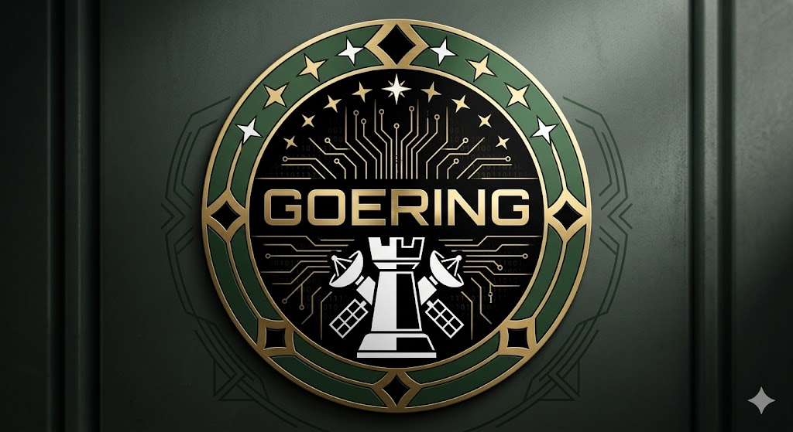
Ray — Game Master
The mastermind behind our current campaign. He is a very skilled writer and a ruthless game master, always throwing a challenge at us.
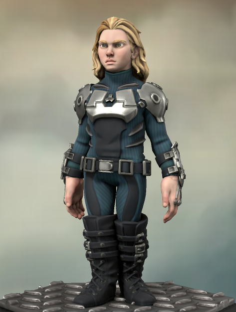
Daniel — As Gloryline
The gremlin of the team, an orphaned child soldier that has grown up in wars, and plays with the wrecks of her enemies as dolls.
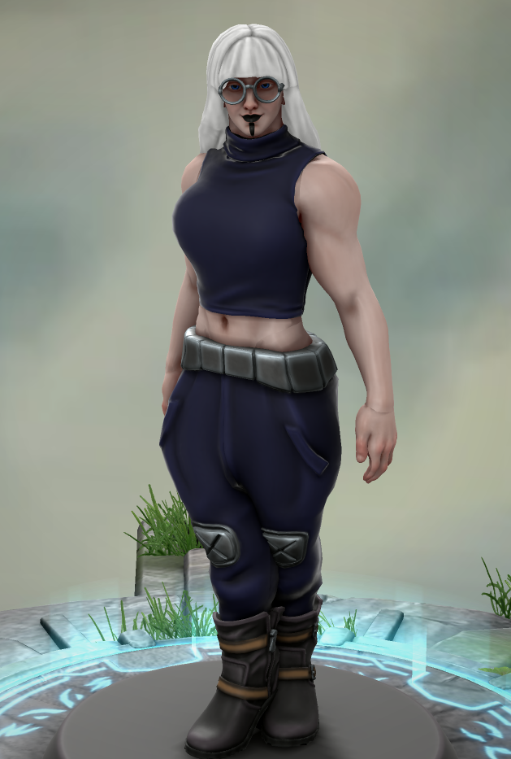
Gabe — As Circe
A gentle giant of a person, an ex-soldier now working as a mercenary to be able to fund an orphanage.
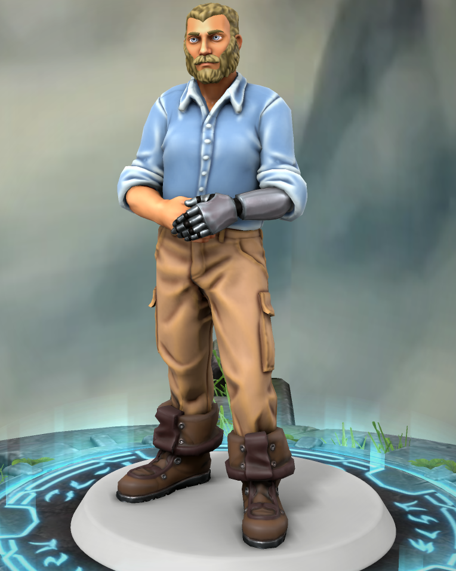
Easson — As Pol
The strategist and de facto leader of the group. He doesn't have a sense of humor and takes things so seriously that it becomes funny.
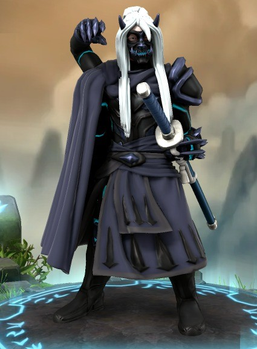
Luke — As Raiden
The samurai hacker archetype. Obsessed with technology to the point of having an AI girlfriend, and working as a mercenary to afford a body to upload her into.
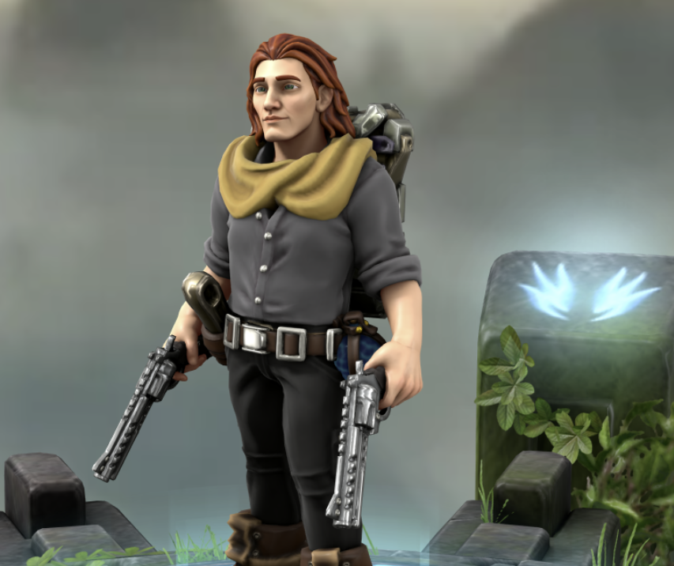
Etherial — As Asrael
The gunslinging priest, follower of a religion that worships mechs as gods, searching for the one mech to rule them all.
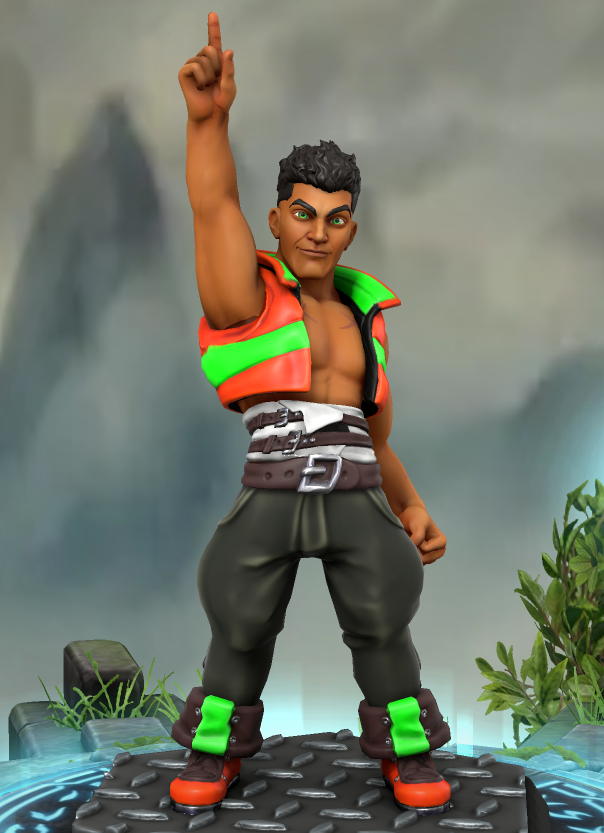
Myself — As Duarte
A hot-headed idiot who rushes into battle without much regard for his life. A revolutionary fighter turned mercenary to acquire funds for the revolution back home.
The team are members of a taskforce under the Goering Mercenary Company, they are assigned all kinds of jobs that the planetary governments or the mega-corps dont want to be associated with, such as black ops, sabotage, supply-line disruptions, etc.
AI Prompts
Claude
- How can I have a single index.html file divided into sections, but only show 1 section at a time, and be able to switch between sections by using a navigation bar?
- Ok and from there how would you be able to switch the page's title depending on the section like: page / home, or page / about, when their section is chosen?
- Can you help me fix the slideshow script: 'carousel' was used before it was defined.
- I want you to help me make the skeleton for a page I'm making... [provided full requirements]
- This is the basic (incomplete) structure of the page and its sections, can you help me plug it into the code I have?
- can you help me display this contents horizontaly [Who section]
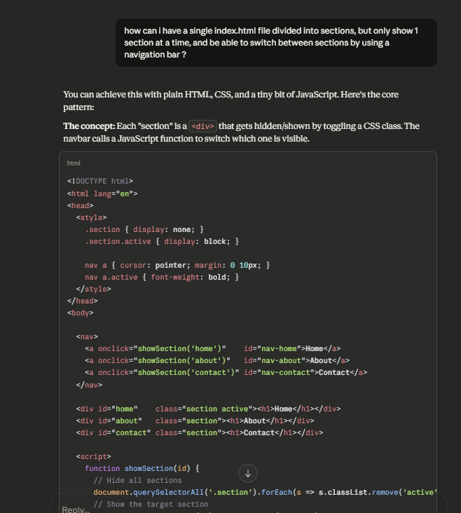
Gemini
- Can you create an image of a Monarch, a Blackbeard and a Barbarossa. The Blackbeard is holding a chain-axe and throwing its hook at an enemy. The Monarch flying up above while sending missile barrages on its enemies. And the Barbarossa, tall as a mountain, looming in the background as it charges its Apocalypse Rail.
- the scene is of a city in ruins, there are recked enemy mechs across, and there are others fighting in the background, there is going to be a IPSN Nelson frame rushing through the battlefield with its thrusters at max capacity
- generate an image of the inside of a public library, with the people inside blured, the focus of the image are the book-shelves
- generate an image of a game/hobby shop, long tables with groups of people on the playing table top games, and shelves in the background with boxes for those table games. in the same maner as the last request, please blur any on the people as they are only there to add life to the place
- now i want you generate another image about LANCER RPG, thi time about a wheat field that extends through rolling hills, on the wheat field GMS soldiers with their iconic white mechas with red accents, patrolling the area. showing how LANCER can be pretty at times
- generate an image a group of 3 mercenary LANCER pilots drinking in a bar, neon lights, tables with other people blured, and window to the outside on the city in the background. as for the mercenaries: one of them is of darker skin complexion, and bleached hair, he has some cybernetic implants on his face, they are lines of chrome that go from bellow his right eye to his right ear and then down to his neck. he has a golden thooth, and he is holding the glass of beer on his hand as he laughs with his team. use the colors green, purple, yellow, and black for this characters outfit another mercenary is a more quiet and reserved than the rest. he is wearing darker clothes, and has some kind of wearable hacking deck in front of him on the table. he has pale skin, and dark hair. use the colors black, dark blue, and grey for this character's outfit. and then there is another mercenary, a muscular woman with visible scars across her arms and face. she is laughing with the first mercenary, and they seem to be having a great time. she is not holding her drink, but it is in front of her on the table. she is wearing a bullet proof vest inside the bar, ready for action if it comes. use red, black, and white, with metalic accents for this character's outfit.
- I want you to generate an image of a group of friends gathered across a table
- generate an image of a generic internet forum, such as reddit, where there are people writting about finding a group to play LANCER with
- generate an image of a GMS Everest
- now do the same for a GMS Sagarmatha, its a size 2 mech so make sure the weight and size shows
- now for the GMS chomolungma, make it about the same size as the everest, but make it thiner and give it anthenas or something to show that it is the hacking frame of GMS
- generate an image of the logo of a mercenary company, of a group of mercenaries in a LANCER campaign. the name of the company is goering, its base of operations is a orbital satelite ship known as the rook. have emblem be a circle with the name of the company inside, surrounded by stars, and bellow the name the sillouette of the rook. use dark green, black, white and gold for this
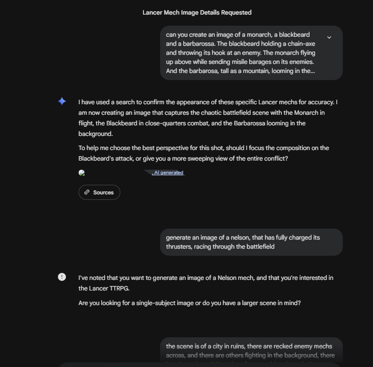
Chat GPT
- can you help me fix any grammatical errors within this file ? [provided whole file]
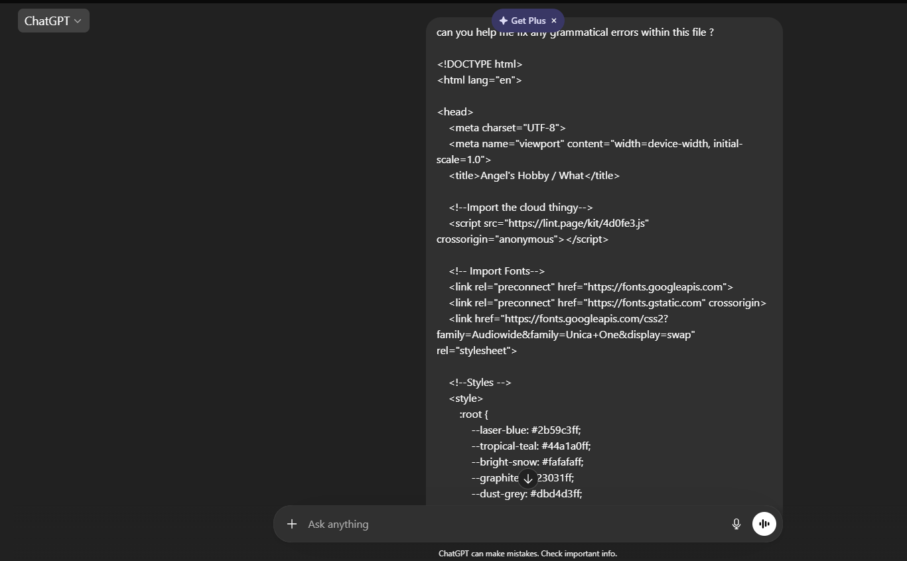